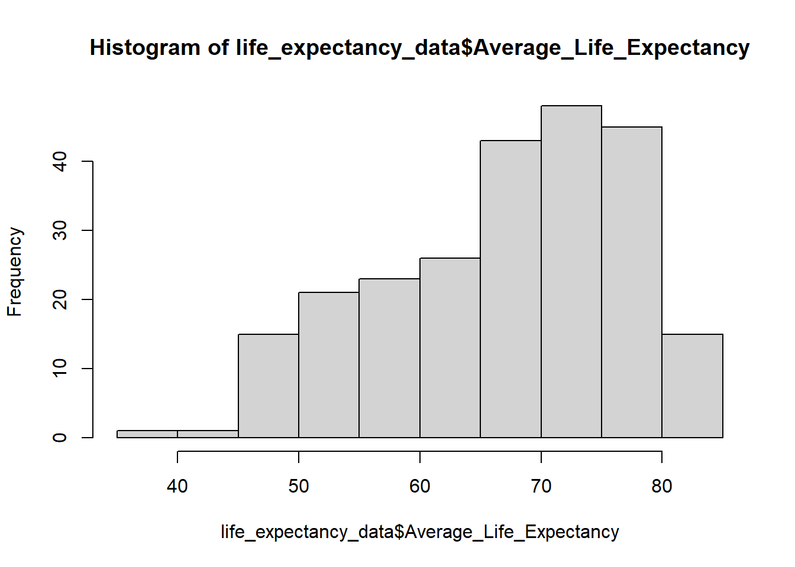
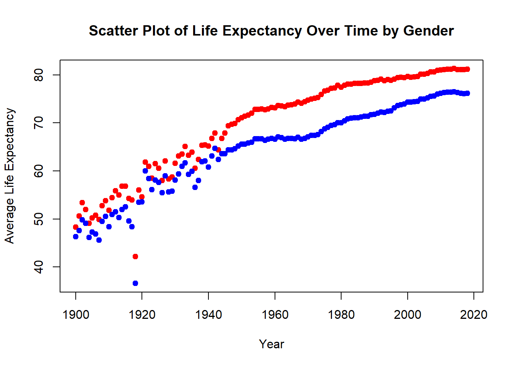

Code
# Reading the CSV file
life_expectancy_data <- read.csv("US_Life_expectancy.csv")Data Visualization with Basic R
Instructor: Xingyuan Zhao
The plot() function in R is a versatile tool for creating various basic plots. Scatter plots, line plots, histograms, and more can be generated depending on the input data and arguments. Users can create informative visual representations of data by specifying different types (e.g., points, lines) and attributes (e.g., colors, labels).
# Reading the CSV file
life_expectancy_data <- read.csv("US_Life_expectancy.csv")# Basic histogram of Average Life Expectancy
hist(life_expectancy_data$Average_Life_Expectancy)
# Histogram Parameters
hist(life_expectancy_data$Average_Life_Expectancy,
main = "Histogram of Average Life Expectancy",
xlab = "Average Life Expectancy",
col = "lightblue",
border = "grey")
main adds a title to the histogram.
xlab sets the label for the x-axis.
col changes the color of the bars to light blue.
border specifies the color of the bar borders. These options improve the plot’s readability and visual appeal.
The default colors provided by Rstudio can be found at the link below.
https://www.nceas.ucsb.edu/sites/default/files/2020-04/colorPaletteCheatsheet.pdf
# Adding mean and median lines
mean_le <- mean(life_expectancy_data$Average_Life_Expectancy, na.rm = TRUE)
median_le <- median(life_expectancy_data$Average_Life_Expectancy, na.rm = TRUE)
mean() and median() functions calculate the mean and median of Average_Life_Expectancy, respectively.
na.rm = TRUE ensures that NA values are ignored in the calculations, preventing errors.
# Replotting with mean and median
hist(life_expectancy_data$Average_Life_Expectancy,
main = "Histogram of Average Life Expectancy with Mean and Median",
xlab = "Average Life Expectancy",
col = "lightblue", border = "black")
abline(v = mean_le, col = "blue", lwd = 2)
abline(v = median_le, col = "red", lwd = 2)
abline() adds vertical lines for the mean and median.
lwd = 2 selects the thickness of the line.
# adding the legend
hist(life_expectancy_data$Average_Life_Expectancy,
main = "Histogram of Average Life Expectancy with Mean and Median",
xlab = "Average Life Expectancy",
col = "lightblue", border = "black")
abline(v = mean_le, col = "blue", lwd = 2)
abline(v = median_le, col = "red", lwd = 2)
legend("topleft", legend = c("Mean", "Median"), col = c("blue", "red"), lwd = 2)
topleft specifies the position of the legend. Try different ones: topright, bottomleft, bottomright, right, left, top, bottom.
# Basic boxplot by Gender
boxplot(Average_Life_Expectancy ~ Gender, data = life_expectancy_data,
main = "Boxplot of Life Expectancy by Gender",
xlab = "Gender", ylab = "Average Life Expectancy")
The ~ symbol separates the dependent variable (Average_Life_Expectancy) from the independent variable (Gender), indicating a relationship.
The boxplot() function displays the distribution of life expectancy across genders, showing medians, quartiles, and potential outliers.
# Boxplot with colors
boxplot(Average_Life_Expectancy ~ Gender, data = life_expectancy_data,
main = "Boxplot of Life Expectancy by Gender",
xlab = "Gender", ylab = "Average Life Expectancy",
col = c("lightblue", "lightgreen"))
The col parameter assigns different colors to each box.
# Scatter plot with data points
plot(life_expectancy_data$Year, life_expectancy_data$Average_Life_Expectancy,
xlab = "Year", ylab = "Average Life Expectancy",
main = "Scatter Plot of Life Expectancy Over Time",
pch = 19)
plot() creates a scatter plot with Year on the x-axis and Average_Life_Expectancy on the y-axis.
pch sets different shapes for points. Try out different shapes.
pch = 19 specifies the plotting character (point symbol) to use. Different pch values represent different shapes, which you can explore here.
http://www.sthda.com/english/wiki/r-plot-pch-symbols-the-different-point-shapes-available-in-r
# Scatter plot with gender-colored points
plot(life_expectancy_data$Year, life_expectancy_data$Average_Life_Expectancy,
xlab = "Year", ylab = "Average Life Expectancy",
main = "Scatter Plot of Life Expectancy Over Time by Gender",
pch = 19, col = ifelse(life_expectancy_data$Gender == "Male", "blue", "red"))
The col argument uses an ifelse() condition to color points by gender.
# Basic line plot of Average Life Expectancy over time
plot(life_expectancy_data$Year, life_expectancy_data$Average_Life_Expectancy,
type = "l", col = "darkgray",
xlab = "Year", ylab = "Average Life Expectancy",
main = "Line Plot of Life Expectancy Over Time")
type = “l” indicates that the plot should be a line plot.
# Line plot with lines colored by gender
male_data <- subset(life_expectancy_data, Gender == "Male")
female_data <- subset(life_expectancy_data, Gender == "Female")
plot(male_data$Year, male_data$Average_Life_Expectancy,
type = "l", col = "blue", lwd = 2,
xlab = "Year", ylab = "Average Life Expectancy",
main = "Line Plot of Life Expectancy by Gender Over Time",
xlim = c(min(life_expectancy_data$Year), max(life_expectancy_data$Year)),
ylim = c(min(life_expectancy_data$Average_Life_Expectancy, na.rm = TRUE),
max(life_expectancy_data$Average_Life_Expectancy, na.rm = TRUE)))
lines(female_data$Year, female_data$Average_Life_Expectancy, col = "red", lwd = 2)
subset() creates separate data frames for male and female data.
lines() adds another line to the existing plot, distinguishing between male and female trends by color.
lwd = 2 specifies the line width, making it more distinct.
The plot() function can initialize a plot with just axes, using xlim and ylim to set axis limits.
# Customized plot with titles and labels
plot(male_data$Year, male_data$Average_Life_Expectancy,
type = "l", col = "blue", lwd = 2,
xlab = "Year", ylab = "Average Life Expectancy (years)",
main = "Life Expectancy by Gender Over Time",
lty = 1,
xlim = c(min(life_expectancy_data$Year), max(life_expectancy_data$Year)),
ylim = c(min(life_expectancy_data$Average_Life_Expectancy, na.rm = TRUE),
max(life_expectancy_data$Average_Life_Expectancy, na.rm = TRUE)))
lines(female_data$Year, female_data$Average_Life_Expectancy, col = "red", lwd = 2, lty = 2)
lty specifies line types (solid for males, dashed for females).
# Adding legends and annotations
plot(male_data$Year, male_data$Average_Life_Expectancy,
type = "l", col = "blue", lwd = 2,
xlab = "Year", ylab = "Average Life Expectancy (years)",
main = "Life Expectancy by Gender Over Time",
lty = 1,
xlim = c(min(life_expectancy_data$Year), max(life_expectancy_data$Year)),
ylim = c(min(life_expectancy_data$Average_Life_Expectancy, na.rm = TRUE),
max(life_expectancy_data$Average_Life_Expectancy, na.rm = TRUE)))
lines(female_data$Year, female_data$Average_Life_Expectancy, col = "red", lwd = 2, lty = 2)
legend("bottomright", legend = c("Male", "Female"), col = c("blue", "red"), lwd = 2, lty = c(1, 2))
text(1918, 75, "End of World War I", col = "black")
abline(v = 1918, col = "black", lwd = 1, lty = 3)
legend() adds a legend, and text() and abline() add annotations and vertical lines.
# Your code here
# 1. Histogram
hist(life_expectancy_data$Age_adjusted_Death_Rate,
main = "Histogram of Age-adjusted Death Rate",
xlab = "Age-adjusted Death Rate",
col = "lightgray", border = "black")
abline(v = mean(life_expectancy_data$Age_adjusted_Death_Rate, na.rm = TRUE), col = "blue", lwd = 2)
abline(v = median(life_expectancy_data$Age_adjusted_Death_Rate, na.rm = TRUE), col = "red", lwd = 2)# 2. Boxplot by gender
boxplot(Age_adjusted_Death_Rate ~ Gender, data = life_expectancy_data,
main = "Boxplot of Age-adjusted Death Rate by Gender",
xlab = "Gender", ylab = "Age-adjusted Death Rate",
col = c("lightblue", "lightgreen"))# 3. Scatter plot
plot(life_expectancy_data$Year, life_expectancy_data$Age_adjusted_Death_Rate,
xlab = "Year", ylab = "Age-adjusted Death Rate",
main = "Scatter Plot of Death Rate Over Time by Gender",
pch = 19, col = ifelse(life_expectancy_data$Gender == "Male", "blue", "red"))# 4. Line plot by gender
plot(male_data$Year, male_data$Age_adjusted_Death_Rate,
type = "l", col = "blue", lwd = 2,
xlab = "Year", ylab = "Age-adjusted Death Rate",
main = "Line Plot of Death Rate by Gender Over Time",
xlim = c(min(life_expectancy_data$Year), max(life_expectancy_data$Year)),
ylim = c(min(life_expectancy_data$Age_adjusted_Death_Rate, na.rm = TRUE),
max(life_expectancy_data$Age_adjusted_Death_Rate, na.rm = TRUE)))
lines(female_data$Year, female_data$Age_adjusted_Death_Rate, col = "red", lwd = 2)
legend("topright", legend = c("Male", "Female"), col = c("blue", "red"), lwd = 2)In this session, we’ve explored creating and customizing plots using base R, starting from basic visualizations…to more detailed visualizations by adding elements such as mean and median lines, customizing boxplots by gender, and distinguishing data points and lines by color based on gender. We also covered essential aspects of adding titles, labels, legends, and annotations.
Continue experimenting with different plot types and customizations to enhance your data visualization skills.
Q&A: Share any questions or challenges you’ve encountered while creating these visualizations. Let’s discuss different approaches and solutions!